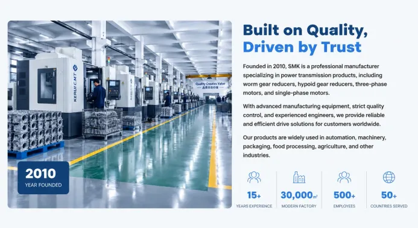

Specialized in Worm Gear Reducers, Hypoid Gearboxes and Electric Motors.

High quality products for various industrial applications

Compact and reliable worm gear reducers for industrial power transmission applications.
VIEW MORE →
High-efficiency hypoid gear reducers featuring compact design and superior transmission performance.
VIEW MORE →
Reliable electric motors with stable performance and IEC standard dimensions.
VIEW MORE →
Integrated gear motor solutions with compact structure and high output torque.
VIEW MORE →
Providing reliable gear reducers and electric motors with professional manufacturing experience and global service support.
Professional manufacturer specializing in gear reducers and electric motors.
Every product undergoes rigorous inspection before shipment.
Direct factory supply without unnecessary middlemen.
Customized solutions based on your drawings or requirements.
Products exported to Europe, South America, Asia and the Middle East.